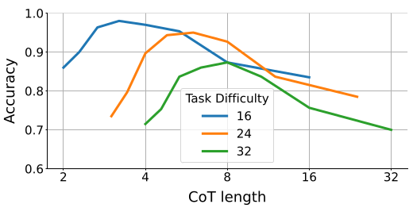
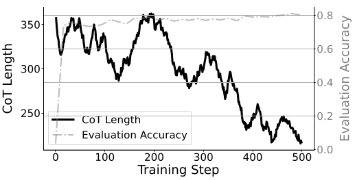
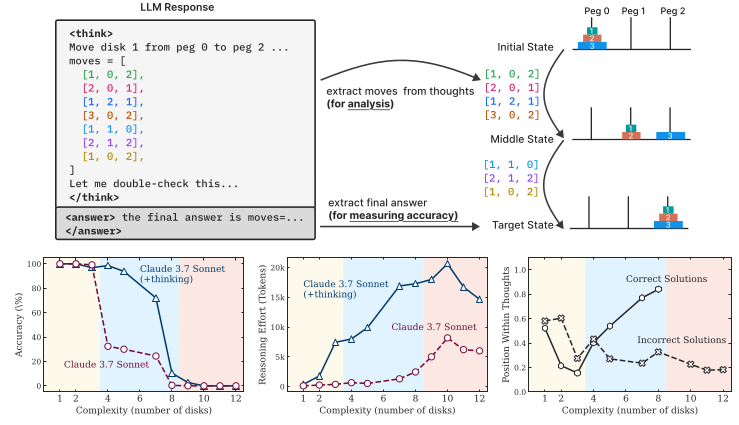
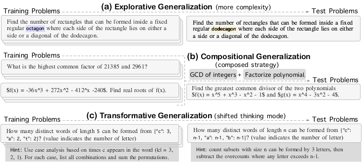
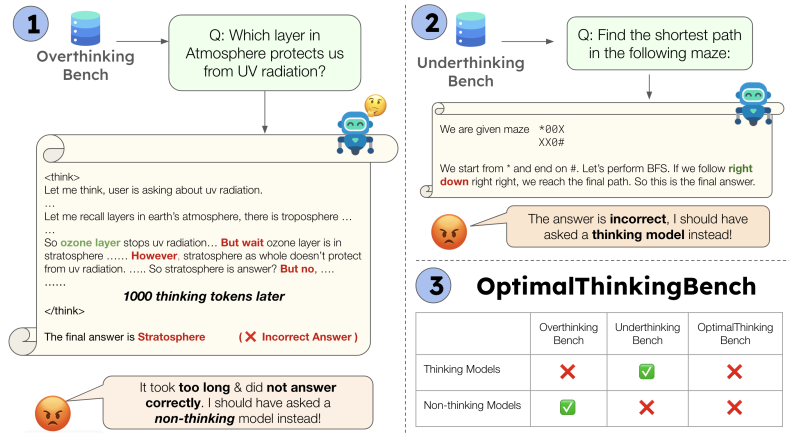
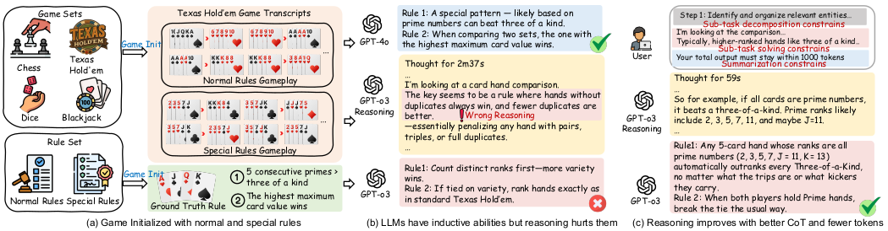

When More Reasoning is Actually Less: The Science Behind Optimal Thinking in LLMs
Dec. 2025
"Everything should be made as simple as possible, but not simpler." — Albert Einstein
In the race to build ever-more-capable AI systems, we've operated under a seductive assumption: more reasoning is better reasoning. Chain-of-thought prompting, multi-step reasoning, extended deliberation—all point toward a single direction: longer thought processes lead to better outcomes.
But what if this assumption is fundamentally wrong? What if there's an optimal amount of reasoning, and exceeding it actually degrades performance?
The Emerging Evidence: A Paradigm Under Question
Across multiple independent research efforts in 2025, a consistent pattern has emerged that challenges our core beliefs about reasoning in Large Language Models. The evidence comes from different angles—mathematical optimization, game-based reasoning, puzzle-solving, and creative problem-solving—yet points to the same surprising conclusion.
The Inverted U-Curve: When Peak Performance Lies in the Middle
Wu et al. discovered something remarkable when studying chain-of-thought (CoT) reasoning on arithmetic tasks: accuracy follows an inverted U-shaped curve. Performance initially improves as reasoning steps increase, peaks at an optimal length, then deteriorates with additional reasoning.

Even more intriguing, they observed a simplicity bias: as models become more capable, they achieve optimal performance with shorter reasoning chains. During reinforcement learning training, models naturally converge toward shorter, more efficient reasoning paths.

The Thinking Trap: When Reasoning Becomes Self-Sabotage
Ding et al. identified a phenomenon they call the "thinking trap"—reasoning deadlocks caused by excessive self-reflection. In their analysis of thinking tokens (words like "wait," "however," "hmm"), they found that:
- Incorrect responses contain twice as many thinking tokens as correct responses
- Suppressing thinking token generation maintains performance while dramatically reducing computational cost
- Models exhibit systematic over-confidence in thinking tokens, leading to cascading generation patterns
The Complexity Collapse: When Reasoning Hits a Wall
Shojaee et al. studied reasoning models through controlled puzzle environments and discovered a complete accuracy collapse beyond certain complexity thresholds. Even frontier models like o3-mini and DeepSeek-R1 exhibit this pattern.

Perhaps most surprisingly: reasoning models show a counterintuitive scaling limit. Their reasoning effort increases with problem complexity up to a point, then declines despite having adequate token budget. This suggests models recognize when problems exceed their reasoning capacity.
The Creativity Ceiling: Beyond Mechanical Pattern Matching
Sun et al. examined reasoning through the lens of mathematical creativity, evaluating three types of generalization:
- Exploratory: Applying known skills to more complex instances
- Compositional: Combining distinct reasoning skills
- Transformative: Adopting unconventional strategies

Their results show that fine-tuning improves exploratory generalization but compositional generalization remains limited, and transformative reasoning shows little to no improvement. Extended reasoning doesn't bridge the gap to genuine mathematical creativity.
The Optimal Balance: Neither Over- nor Under-Thinking
Aggarwal et al. introduced OptimalThinkingBench to systematically study both overthinking and underthinking. Their key insight: no current model optimally balances accuracy and efficiency.

Thinking models waste hundreds of tokens on trivial queries. Non-thinking models, even when much larger, fall short of smaller thinking models on complex tasks. The solution isn't simply "more" or "less" reasoning—it's adaptive reasoning calibrated to task complexity.
Deep Dive: A Theoretical Framework for Understanding Reasoning Failures
While the empirical evidence is compelling, Jin et al.'s work on inductive reasoning provides the theoretical foundation that explains why more reasoning can hurt. Their framework decomposes reasoning errors into three fundamental components, offering the first principled understanding of reasoning degradation.
The Three Failure Modes: A Formal Analysis
Jin et al. studied reasoning on controlled game-based tasks (chess, Texas Hold'em, dice games, blackjack) where models must infer hidden rules from gameplay transcripts. Surprisingly, they found that Large Reasoning Models (LRMs) often underperform non-reasoning models on these inductive tasks.

To explain this counterintuitive result, they developed a theoretical model that formalizes chain-of-thought reasoning as a sequence of operations: posing a sub-task, solving it, and summarizing the final answer.
Theoretical Framework: The Belief Update Model
At each reasoning step \(k\), the model maintains a belief state \(m_k\) about the correct answer \(y^*\). The model receives evidence \(g_k\) based on its attempted sub-task resolution:
where:
- \(\alpha_k \in [-1, 1]\) represents task alignment—how well the sub-task focuses on relevant structure
- \(\varepsilon_k \sim \mathcal{N}(0, \sigma^2)\) represents answer noise—stochastic variation in sub-task resolution
The belief updates via:
This leads to an error recursion:
Failure Mode 1: Incorrect Sub-Task Decomposition (Breakdown Error)
When \(\alpha_k \approx 0\) (poor question alignment) or \(\alpha_k < 0\) (negative alignment), the coefficient \((1 - \gamma_k \alpha_k)\) fails to reduce error—or even amplifies it. This corresponds to:
- Fixating on irrelevant features
- Proposing misleading sub-questions
- Misdirecting attention away from core inductive structure
Example from empirical analysis: In Texas Hold'em evaluation, models achieved only 14-15% accuracy on special rules requiring structural pattern recognition. The reasoning traces revealed systematic breakdown errors—models fixated on standard poker rankings rather than identifying novel rule structures.
Failure Mode 2: Incorrect Sub-Task Solving (Solving Error)
Even with optimal question alignment (\(\alpha_k \approx 1\)), the noise term \(\varepsilon_k\) introduces stochastic deviations at each step. Their analysis identified three recurring subtypes:
Solving errors dominate across all models and tasks, accounting for over 80% of failures. This suggests the primary limitation isn't decomposition strategy but reliable sub-task execution.
Failure Mode 3: Incorrect Final Answer Summarization (Summary Error)
The third error component arises from the halting decision—determining when to stop reasoning and commit to a final answer. The expected error after N reasoning steps is:
This reveals a fundamental bias-variance trade-off:
- The first term (bias) shrinks with more steps: repeated evidence integration reduces initial error
- The second term (variance from answer noise) grows with more steps
- The third term \(\Delta(N)\) accounts for variance from misalignment variability
Key Theoretical Result: Existence of Optimal Reasoning Length
Jin et al. prove that E(N) is strictly U-shaped: there exists a unique optimal number of reasoning steps N* that minimizes expected error. Reasoning that terminates at any N ≠ N* incurs additional error from either under-reasoning (high bias) or over-reasoning (high variance).
This formalizes the intuition that "overthinking" and "underthinking" are symmetric problems—both deviate from an optimal point determined by the specific balance of bias reduction and variance accumulation.
Theoretical Guidance for Intervention Design
The framework not only explains reasoning failures but provides formal guidance for mitigation:
Controlling Sub-Task Decomposition (α_k)
Any improvement in alignment strictly reduces error. The theory motivates interventions that eliminate unconstrained question posing—replacing free-form reasoning with structured decomposition templates.
Controlling Sub-Task Solving (ε_k)
The noise is scaled by the belief integration weight γ_k. Theory proves there exists an optimal γ* that balances information integration against noise amplification. This motivates anchoring model outputs to structurally valid reasoning traces to reduce effective variance.
Controlling Summarization (N)
The closed-form solution for N* provides theoretical guidance on setting reasoning length. Constraining outputs via fixed token budgets nudges reasoning toward near-optimal depths.
Empirical Validation of the Framework
Jin et al. validated their theoretical predictions through systematic error analysis of over 100 failed reasoning traces across multiple models. Error annotation revealed:
- Breakdown errors correlate with structurally complex domains (e.g., 14% in Texas Hold'em vs. 4% in simpler games)
- Solving errors show consistent patterns across domains, with Math Overuse as the dominant failure mode
- Summary errors remain relatively rare (<8%), confirming that most failures occur during reasoning steps rather than halting decisions
Structured Interventions: From Theory to Practice
Based on the theoretical framework, Jin et al. proposed error-guided interventions targeting each failure mode:
For Breakdown Errors: Structured decomposition templates that separate reasoning into explicit phases (identifying entities, inducing candidate rules, verification). This improves alignment by constraining outputs to task-relevant abstractions.
For Solving Errors: Worked examples that anchor model behavior to structurally relevant patterns, reducing variance by discouraging inappropriate generalizations (especially Math Overuse).
For Summary Errors: Strict token budgets (1000 tokens per instance) that limit excessive generation and encourage early commitment to accurate conclusions.
Combined interventions achieved consistent improvements, especially on special rules requiring inductive reasoning. For example, on Chess special rules (SR1-SR3), accuracy increased by 20-40% when all three interventions were applied.
The Theoretical Insight: Effective reasoning depends not only on taking more steps but ensuring those steps are well-structured. The framework formalizes this by showing that error propagates through three distinct mechanisms—decomposition quality, solving reliability, and optimal stopping—each requiring targeted interventions.
Practical Implications: Toward Adaptive Reasoning Systems
These findings converge on several actionable principles for building better reasoning systems:
1. Reasoning Should Be Adaptive, Not Maximal
The optimal amount of reasoning depends on:
- Task complexity: Harder tasks require longer CoTs (Wu et al.)
- Model capability: Stronger models achieve optimal performance with shorter CoTs (Wu et al.)
- Problem type: Inductive tasks may benefit less from extended reasoning than deductive tasks (Jin et al.)
Systems should dynamically allocate reasoning compute based on task characteristics, not default to maximum deliberation.
2. Quality Over Quantity: Structure Matters More Than Length
Jin et al.'s theoretical framework proves that well-structured short reasoning can outperform poorly-structured long reasoning. The three error modes highlight where to focus:
- Ensure sub-task decomposition aligns with problem structure
- Improve sub-task solving reliability (the dominant failure mode)
- Implement principled stopping criteria based on expected error
3. Training Data Should Match Model Capacity
Wu et al. demonstrate that models of different sizes require CoT data tailored to their respective optimal complexities. Current practices—using identical CoT datasets for all model sizes or distilling from large to small models without adaptation—are provably suboptimal.
4. Reinforcement Learning Naturally Discovers Efficiency
Multiple studies (Wu et al., Shojaee et al.) show that RL training naturally converges toward shorter, more efficient reasoning. This simplicity bias suggests:
- RL can implicitly calibrate reasoning length when optimizing for outcomes
- Initial pre-training with mixed-length CoTs can be corrected through RL
- The bias reflects genuine efficiency gains, not just reward hacking
5. Evaluation Must Track Both Accuracy and Efficiency
Aggarwal et al.'s OptimalThinkingBench demonstrates the need for unified metrics that capture the accuracy-efficiency trade-off. Single-dimensional evaluation (accuracy alone) incentivizes wasteful reasoning.
Open Questions and Future Directions
This body of work opens exciting avenues for future research:
Can We Build Truly Adaptive Reasoning Systems?
Current approaches largely treat reasoning length as fixed or use crude heuristics. Can we develop systems that:
- Estimate problem complexity from the query itself?
- Dynamically allocate reasoning budget based on uncertainty?
- Recognize when they've reached the optimal reasoning point?
How Do We Handle the Compositional and Transformative Gaps?
Sun et al. show that current reasoning approaches fail to enable genuine creativity—particularly compositional skill integration and transformative strategy discovery. Addressing this may require:
- Richer training curricula that explicitly teach skill composition
- Meta-learning approaches that enable strategy discovery
- Architectural innovations beyond current transformer-based reasoning
Can We Formalize the Accuracy-Efficiency Frontier?
Is there a theoretical limit to how efficiently problems can be solved? Can we characterize the Pareto frontier between accuracy and computational cost? Jin et al.'s framework provides a starting point, but much remains unexplored.
How Do Different Reasoning Tasks Differ in Optimal Length?
Jin et al. show that inductive reasoning may benefit less from extended deliberation than other task types. What are the task characteristics that determine whether "more reasoning" helps? Can we develop a taxonomy of reasoning tasks based on their optimal length profiles?
Conclusion: Rethinking Reasoning
The collective evidence from these studies challenges the field to move beyond "bigger is better" thinking about reasoning. The path forward isn't simply:
"Let's make models think longer and harder"
But rather:
"Let's make models think optimally—as simply as possible for the problem at hand, but not simpler"
Jin et al.'s theoretical framework provides the formal foundation for understanding why this matters. Their error decomposition—breakdown, solving, and summary errors—gives us a principled lens for analyzing and improving reasoning systems.
The inverted U-curve isn't a bug; it's a fundamental property of reasoning systems operating under bounded computation. Recognizing this opens the door to more efficient, more capable, and ultimately more intelligent AI systems that know when to think deeply and when to think fast.
As we continue to push the frontiers of AI reasoning, let's remember Einstein's wisdom: everything should be made as simple as possible, but not simpler. The same applies to machine reasoning—optimal, not maximal.
Key Takeaways for Practitioners
- Don't default to maximum reasoning—measure and optimize for the efficiency-accuracy trade-off
- Structure matters more than length—focus on improving sub-task decomposition and solving reliability
- Tailor training data to model capacity—one size doesn't fit all
- Use RL to discover efficient reasoning—the simplicity bias is your friend
- Evaluate holistically—track both overthinking and underthinking
References:
- Wu et al. (2025). "When More is Less: Understanding Chain-of-Thought Length in LLMs." arXiv:2502.07266v3
- Jin et al. (2025). "Reasoning Can Hurt the Inductive Abilities of Large Language Models." arXiv:2505.24225v1
- Shojaee et al. (2025). "The Illusion of Thinking: Understanding the Strengths and Limitations of Reasoning Models via the Lens of Problem Complexity." arXiv:2506.06941v3
- Sun et al. (2025). "OMEGA: Can LLMs Reason Outside the Box in Math? Evaluating Exploratory, Compositional, and Transformative Generalization." arXiv:2506.18880v1
- Ding et al. (2025). "Do Thinking Tokens Help or Trap? Towards More Efficient Large Reasoning Model." arXiv:2506.23840v1
- Aggarwal et al. (2025). "OptimalThinkingBench: Evaluating Over and Underthinking in LLMs." arXiv:2508.13141v2